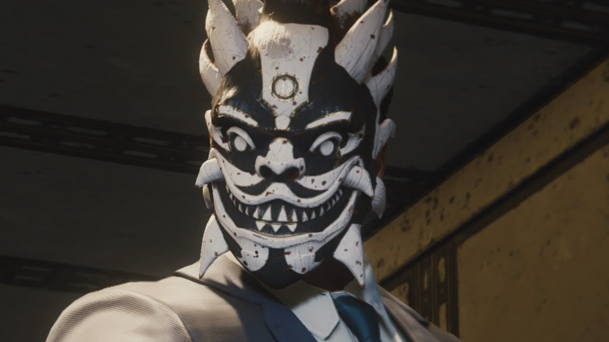

By Mary Jane Watson

Based in Chinatown, the Inner Demons are mysterious enemies easily identified by their elaborate Chinese masks and more formal black-and-white attire.
They operate under direction from Martin Li, aka Mister Negative.
Some Inner Demons wield weapons infused with "negative energy" that can cause Spider-Man great damage. On occasion,
Mister Negative will corrupt an Inner Demon or two through an extended direct touch, giving himself even greater power.
While a number of them are seen speaking English, the Inner Demons generally speak in Mandarin, suggesting that most of them are from China.
Due to their corruption by Martin Li, the Demons share their malevolent personalities with their master
through their dialogue and the orders
they are willing to follow from their leader. These factors indicates that the Inner Demons are a fanatical cult-like organization rather than a criminal
organization. This was also seen when Demon Warehouses were not
fronts for illegal business dealings, but were in fact either terrorism staging grounds or
explosives manufacturing facilities.
During the Osborn rally terror attack, the Demons are shown actively searching for survivors of the explosion to execute on sight, ignoring any attempts of the victims to plead for their lives. While fighting Spider-Man, their dialogue consists of an abundance of threats and boasting about the power given to them by their master. The Inner Demons have basic combat coordination, as they are heard giving direct orders to each other to make sure they can work as a team to defeat Spider-Man.